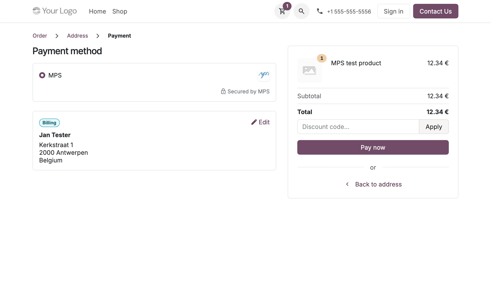
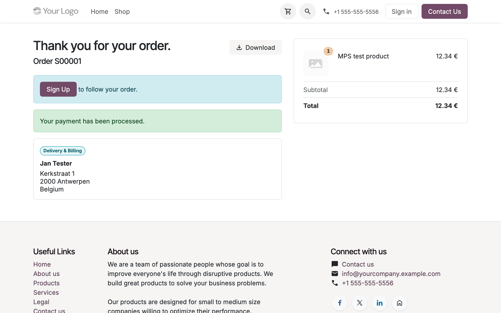
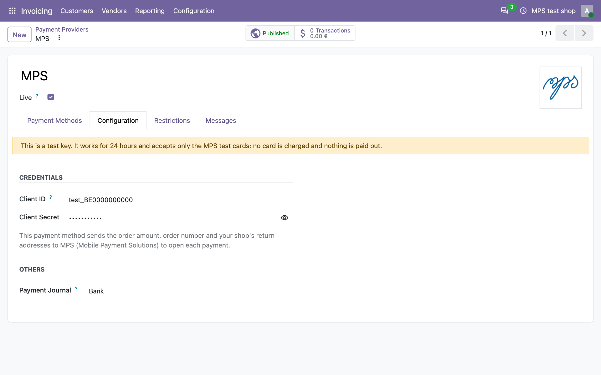
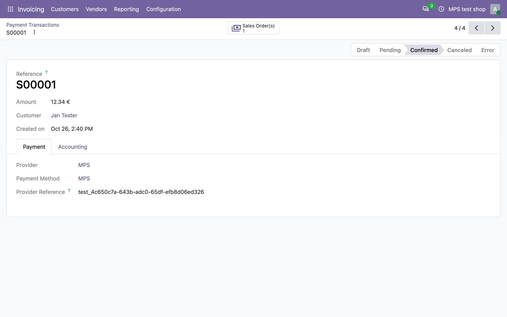

Adds MPS, the Belgian payment institution, as a payment provider. At checkout the shopper is sent to the MPS payment page, pays by card or with their banking app, and comes back to your shop. Card details are entered on the MPS page only and never reach your Odoo database.
A transaction is confirmed only once MPS says the payment arrived, never because the shopper came back to the shop. A partial approval stays pending, with a message, so nothing is delivered unpaid.
The module sends its own notification address with every payment. Paste the webhook signing secret and transactions are confirmed the moment the payment arrives; without it, the module reads the payment itself for six hours.
A test key from the MPS platform runs the whole checkout with the MPS test cards. No card is charged and nothing is paid out. The provider form says when a test key is in use.
The provider settings and the messages shoppers see in your shop are translated into Dutch and French.
The shopper picks MPS at the payment step of the checkout.

They pay on the MPS page and are back on the order confirmation.

The provider takes a client ID and secret from the MPS platform, and says when it is a test key.

Each transaction carries its MPS payment reference.

A client ID starting with test_ is a test key: it works for 24 hours and accepts only the MPS
test cards. Replace it with your live key to take real payments.
This module connects your database to the MPS payment gateway, operated by Mobile Payment Solutions NV (Belgium), a payment institution licensed by the National Bank of Belgium. Nothing is sent until you enter your MPS credentials and save the provider.
From then on, the module sends MPS:
No customer name, address, e-mail or card number is sent by the module. The shopper enters their payment details on the MPS page, where MPS processes them under its own privacy policy and your MPS merchant agreement.
Questions about the module or your MPS account: ict@mps-emi.com